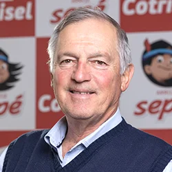
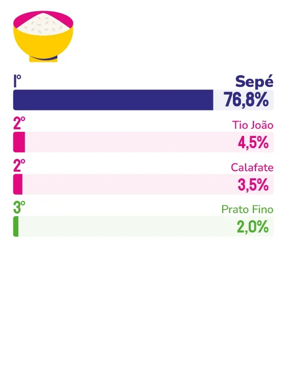

ARROZ
SEPÉ
Marca de maior lembrança espontânea entre os capixabas, Sepé aposta na força do cooperativismo agrícola para manter o vínculo com o consumidor.
Quando uma família capixaba abre o armário da cozinha em busca de arroz, há uma alta probabilidade de que o pacote ali seja da Sepé. A marca soma a maior lembrança espontânea entre os consumidores na pesquisa Marcas Ícones, um resultado que, segundo o presidente da Cotrisel (cooperativa responsável pela produção), José Paulo Salerno, não se explica apenas pelo produto em si.
“Acreditamos que a Sepé ocupa esse espaço porque entrega mais do que produtos: entrega tradição, segurança e presença no dia a dia das famílias”, afirma Salerno. Para ele, quando o consumidor se lembra da marca, associa-a a alimentos de qualidade, sabor, cuidado na produção e confiança na hora da compra – uma lembrança espontânea construída, segundo ele, “com consistência, respeito ao consumidor e compromisso com aquilo que chega à mesa”.
O que diferencia a Sepé de outras marcas de alimentos, segundo o presidente da Cotrisel, está na própria estrutura por trás do produto. “Nosso diferencial está justamente em unir a força do cooperativismo à excelência dos nossos produtos, entregando alimentos confiáveis, acessíveis e presentes na rotina das famílias brasileiras”, explica. Os valores que orientam essa relação, segundo ele, vêm diretamente das raízes do cooperativismo: responsabilidade, transparência, confiança, compromisso com as pessoas, intercooperação e interesse pela comunidade. No dia a dia, isso se traduz em cuidado com a matéria-prima, rigor nos processos produtivos e valorização do trabalho dos produtores cooperados.
Mais do que um momento isolado de virada, Salerno descreve a construção desse vínculo como um processo contínuo. “Cada investimento em qualidade, estrutura, tecnologia e ampliação de portfólio contribuiu para fortalecer esse vínculo”, diz. Para ele, a Sepé vem evoluindo para acompanhar as necessidades do mercado e dos consumidores sem perder sua essência.
Essa essência ganha um símbolo concreto no selo SomosCoop, presente nas embalagens da marca. “Por trás de cada produto existe uma cooperativa formada por produtores rurais que trabalham de forma colaborativa para levar alimentos de qualidade à mesa das famílias”, afirma o presidente da Cotrisel. Segundo ele, esse reconhecimento também depende da parceria construída ao longo dos anos com redes de supermercados, atacadistas e distribuidores, que ajudam a levar os produtos Sepé a milhares de lares capixabas.
Olhando para o mercado capixaba hoje, Salerno descreve um consumidor cada vez mais consciente, atento à relação entre tradição e praticidade. Para os próximos anos, a aposta da empresa segue concentrada em qualidade, fortalecimento da marca e desenvolvimento de produtos alinhados às novas demandas de consumo, mas sem abrir mão, segundo ele, dos princípios que sustentam a cooperativa desde sua origem.


José Paulo Salerno
Presidente da Cotrisel
“Continuaremos evoluindo, inovando e acompanhando as transformações do mercado, sem abrir mão da qualidade dos nossos produtos, da confiança construída com os consumidores e do compromisso com os nossos produtores cooperados. É essa essência, baseada nos valores do cooperativismo e no trabalho coletivo, que nos trouxe até aqui e que continuará guiando a Cooperativa Tritícola Sepeense Ltda (Cotrisel) e a Sepé nas próximas gerações.”
37
